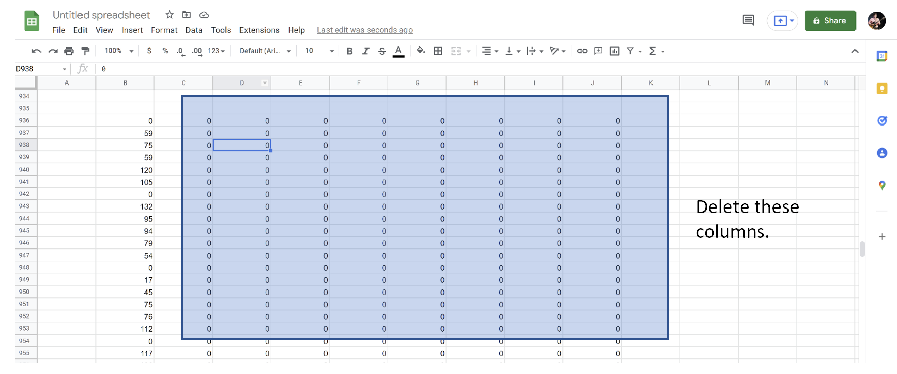

Section 3: Data Cleaning
Contents
Section 3: Data Cleaning¶
We will now switch to analysing our data in a statistical program. Excel and Google Sheets will be referred to here, and can be accessed for free online using your Cambridge ID. If you are used to using a different program such as RStats, SPSS, Stata or Python you may also use this to clean and analyse your data.
Copy the first text file into a spreadsheet, remove unnecessary data.¶
Before you can analyse the data, you need to find a way to clean it. By default, the text files created in MEA consist of a series of numbers, each separated by a space. Each line represents a frame of video, and each number is the amount of motion within an ROI during that frame.
Unfortunately, we cannot tell MEA to ignore the ROIs we have not specified when creating a text output. This means that the unused ROIs will be represented as a series of zeros which we’ll need to remove.
Copy the whole text file into your spreadsheet. It will load in as a single column. Highlight this column, then click Data - Text to Columns and apply (on Excel) or Data - Split Text to Columns (Google Sheets). In both cases, make sure that the delimiter is set to Space. You may then delete the columns filled with zeros.
Expected result:

Copy the second text file and repeat the cleaning.¶
Now, repeat this process for the second text file. You should end up with two columns, one for each video
Convert your raw data for both videos into z-scores to enable easier comparison.¶
You might have noticed that, depending on how large you made each ROI, the range of values given out by MEA can be very large – from zero to several thousand, for instance. To help here, we can convert each data point into a z-score.
The z-score is a standardised figure used commonly in statistics. It represents how far each data point is away from the central mean in units of standard deviation. The important thing to remember is that z-scores allow for comparison of scores obtained for different variables and units.
In order to calculate the z-score, we first need to calculate the mean and standard deviation. In a new cell, enter the following formula (the same for both Excel and Sheets) to calculate the mean, replacing the start and end cell with the coordinates of your sheet:
=AVERAGE(start_cell: end_cell)
Enter this formula into another new cell to calculate the standard deviation:
=STDEV(start_cell: end_cell)
Now we’ve obtained the mean and standard deviation for each dataset, we can calculate the z-score for each point. In a new column next to your data, type the following formula (replace the values with your own) and drag the cell down to calculate z-scores for every data point:
=(data_cell – $mean_$cell)/$stdev_$cell
So, if you want to calculate the z-score for cell A1 with your mean in B1 and standard deviation in B2, your code should look like:
=(A1 – $B$1)/$B$2
Note
The dollar signs included here are really important, as they tell the program to use the same mean and standard deviation cells for each z-score calculation. If you find yourself getting DIV/0 errors when using the z-score calculation, make sure you’ve added them!